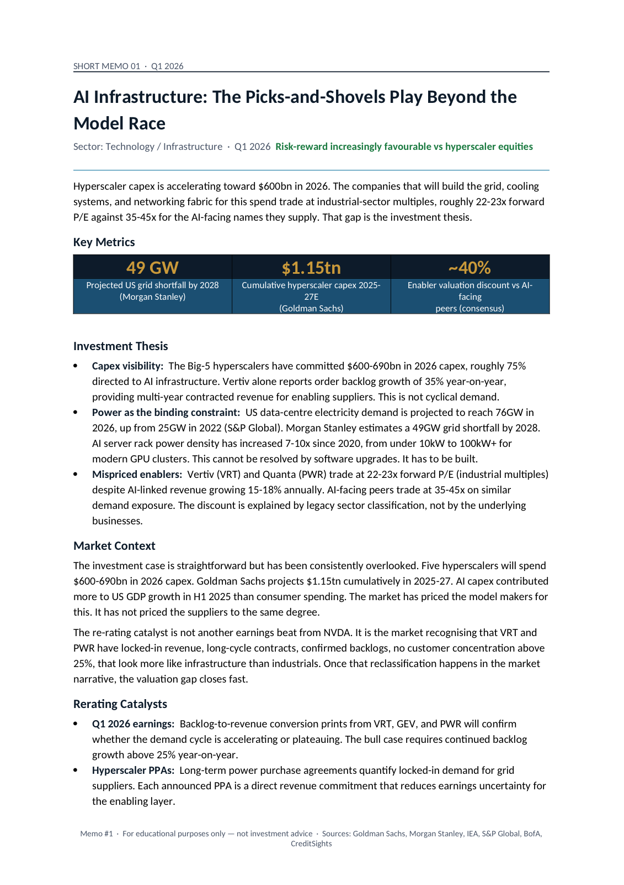
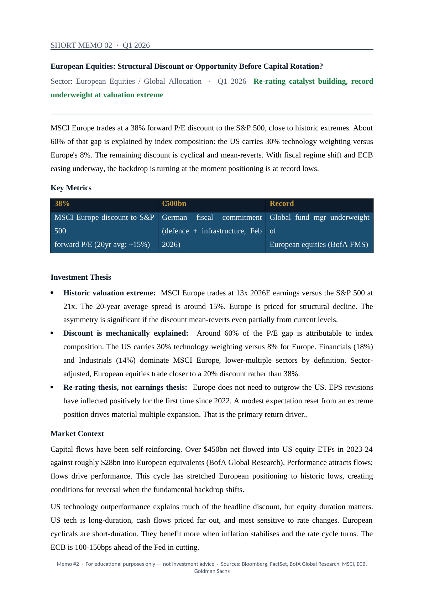
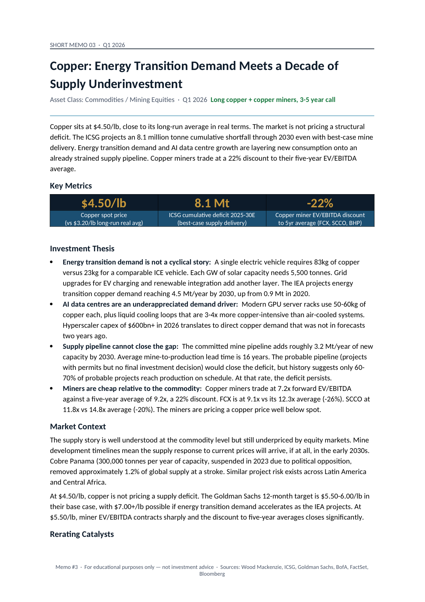
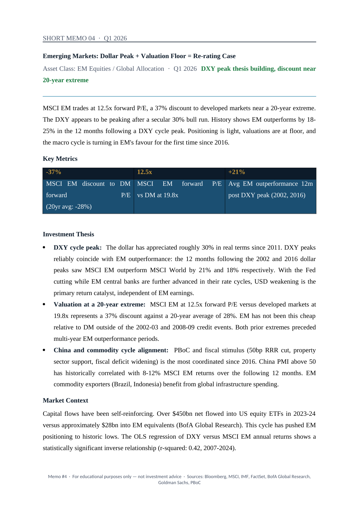
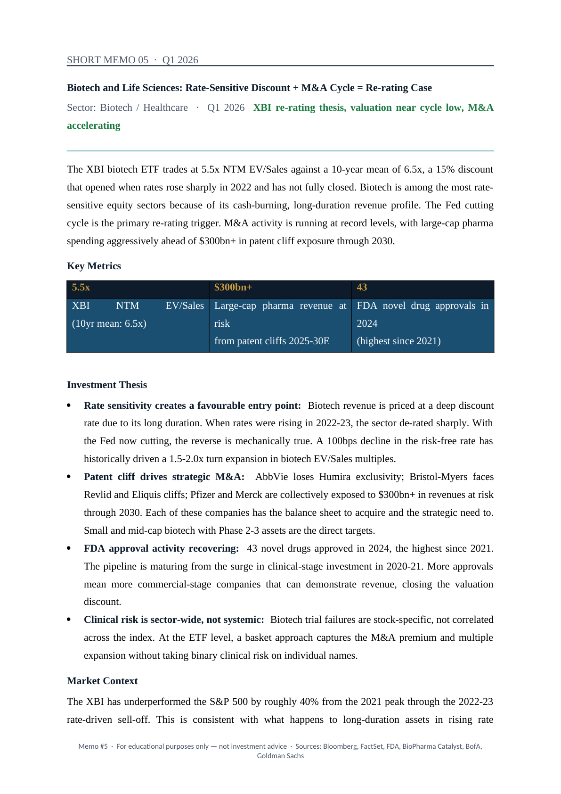

Overview
Five short investment memos, each built to answer one question: is a sector or macro theme mispriced, and if so, why. I wrote them the way the buy-side writes morning notes and investment committee briefs. A complete argument in the space of a page, with the working behind every number kept in a supporting Excel workbook.
The point isn't to be right about every call. It's to show I can form a view, back it with data, and be clear about what would change my mind.
The five memos

AI Infrastructure: the picks-and-shovels play beyond the model race
As hyperscaler capex accelerates toward $600bn in 2026, the money flows to the enablers rather than the model makers: power, cooling and networking. Those names trade at industrial multiples despite revenue tied directly to AI spend.

European Equities: structural discount or opportunity before capital rotation?
MSCI Europe trades at a 38% forward P/E discount to the S&P 500. About 60% of the gap is index composition (30% US tech weight versus 8% for Europe) and the rest is cyclical, with fiscal shift and ECB easing turning the backdrop just as positioning sits at record lows.

Copper: structural deficit meets the dollar cycle and rate tailwind
Energy-transition demand, a supply pipeline that cannot close the gap, a turning dollar and rate cuts all point the same way. At $4.70/lb the market prices near-term equilibrium, not the shortfall that Wood Mackenzie, the ICSG and BloombergNEF project from 2025.

Emerging Markets: dollar peak and valuation floor make the re-rating case
MSCI EM trades at an 11.2x forward P/E, a 38% discount to developed markets and near a 20-year extreme, while the dollar looks to be peaking after a 30% run. EM has historically outperformed by 18 to 25% in the year after a dollar cycle peak.

Biotech & Life Sciences: valuation reset meets the rate cycle
The XBI trades 27% below its 10-year mean EV/Sales after a 66% drawdown. Rising real yields drove the de-rating, and that mechanism is now running in reverse, with the Fed cutting, patent cliffs pushing M&A, and the FDA pipeline at a 10-year high.
How each memo is built
Every memo follows the same routine, so the thinking is easy to follow and easy to challenge:
- Pick a sector, macro theme or market trend worth a real opinion.
- State a clear thesis and the catalyst that would prove it right, plus the condition that would prove it wrong.
- Find the single constraint or transmission mechanism that actually drives the outcome.
- Quantify the mispricing or the opportunity rather than describing it.
- Risk-weight the case honestly, including the reasons it might not work.
The supporting workbook is where the numbers live. Each one carries valuation comps, an OLS regression on the key relationship, a scenario model, the charts used in the memo, and an audit-log tab that shows how every figure was derived. If a number is in the memo, you can trace it back to its source in the workbook.
Tools and sources
Built in Excel and Python (pandas, statsmodels for the regressions, matplotlib for charts), with the memos themselves generated as Word and PDF. Data comes from Bloomberg and LSEG Datastream for markets and fundamentals, the Federal Reserve (FRED) and World Bank for macro series, the ICSG and Wood Mackenzie for copper supply and demand, the FDA for the drug pipeline, and company annual reports for the underlying financials.
These memos are personal research for educational purposes. They are not investment advice and do not represent the views of any institution.